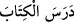

getirmektir. Bu da ancak sihirbazın sihir yapılan kimsenin yapmaktan ve anlamaktan âciz
olduğu bir şey yapmasıyla olur. Nitekim Şerhu’l-Emâlî’de böyle geçmektedir.
Şeyh-i Ekber (k.s.) el-Fütûhâtü’l-Mekkiyye’de der ki: “Sihir seher kökündendir.
Seher ise ilk fecir ile ikinci fecir arasındaki zamandır. Aslı ve karışımı aydınlık ile
karanlığın karışmasından ibârettir. Ona sabahın aydınlığı karıştığı için gece değildir.
Gözün görmesi için güneş doğmadığı için de gündüz değildir. İşte sihirbazların yaptığı
da böyle bir şeydir. Bu iş kesin batıl bir şey değildir ki tamamen yok sayılsın. Çünkü
göz şüphe etmediği bir işi görmüş ve idrak etmiştir. Bu iş sırf hak da değildir ki bizzat
varlığı olsun. Çünkü işin aslı hadd-i zâtında gözün şâhid olduğu ve görenin zannettiği
gibi değildir.” Şeyh Şa’rânî, el-Kibrîtü’l-ahmer’de: “Bu benzerini asla işitmediğimiz
nefis bir sözdür.” der.
44. Halbuki biz onlara okuyacakları kitaplar vermediğimiz gibi senden önce
onlara bir uyarıcı (peygamber) de göndermemiştik.
“Halbuki biz onlara” yâni Mekke müşriklerine “okuyacakları kitaplar
vermediğimiz gibi”
Burada şirk koşmanın aleyhine bir delil vardır. Aynı durum şu âyetlerde de söz
konusudur: “Yoksa onlara bir kesin delil indirdik de o delil müşrik olmalarını mı
söylüyor?” (er-Rûm, 30/35), “Yoksa bundan önce onlara bir kitap verdik de ona mı
tutunuyorlar?” (ez-Zuhruf, 43/21).
kelimesinin çoğul getirilmesinde böyle bir şüphe için açık delillerin ortaya
konulması gerektiğine tenbih vardır.
, mânâsını anlamak için kitabı dikkatlice düşünerek okumaktır. ise
bunu (dersi) tekrar etmektir. Râğıb el-Müfredât’ta der ki: nün mânâsı o şeyin
eseri ve izi kaldı demektir. Bir şeyin eser ve izinin kalması kendisinin ortadan silinip
gitmesini gerektirir. Bundan dolayı silinip gitmek, yok olmak diye
açıklanmıştır. Yine  ” Kitabın ve ilmin izini ezberleyerek
aldı/aldım, demektir. Bunu almak okumaya devam ile olunca, devamlı okumaya ‘ders’
denilmiştir.”
“Senden önce onlara bir uyarıcı” onları şirke çağıran, şirki terk ettikleri takdirde
onları azapla korkutan bir “(peygamber) de göndermemiştik.” Bundan önce de açığa
çıktı ki Allah’a ortak koşmanın hiçbir haklı delili ve gerekçesi yoktur. Öyleyse neden bu
eğri ve yanlış yola gidiyorlar? Bu ifâde onları tamamen cehâlet ve beyinsizliğe nispet
etmektir.